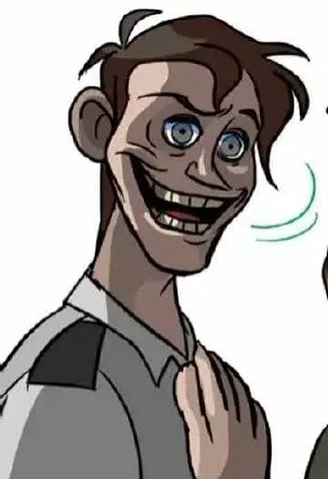
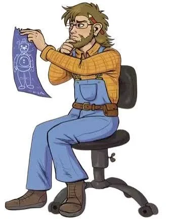

História
Fundada nos anos 80 por Henry Emily e William Afton, a Fazbear Entertainment revolucionou o mercado de pizzarias ao unir um ambiente famíliar com o entretenimento de mais alto nível tecnológico usando robôs animatrônicos para a alegrar a todos. Desde nossos primeiros passos com as seguinte pizzarias:
- 1. Fredbear's Family Dinner (1980-1983)
Fundado no início dos anos 80, este restaurante aconchegante foi o berço da nossa história. Criado para unir famílias com refeições saborosas e entretenimento animacrônico pioneiro, o local estabeleceu nosso compromisso com a diversão. Relatos antigos sobre supostos incidentes mecânicos no local não passam de mitos urbanos sem comprovação técnica; a unidade foi encerrada exclusivamente para abrir caminho para a nossa primeira grande expansão comercial. - 2. Freddy Fazbear's Pizza (1983–1985)
A primeira grande pizzaria da marca apresentou ao mundo a formação clássica que todos amam: Freddy, Bonnie, Chica e Foxy. Tornando-se um fenômeno cultural instantâneo, o local definia o padrão de festas infantis da época. Especulações sensacionalistas veiculadas pela mídia na época sobre segurança foram devidamente esclarecidas, e o fechamento temporário do prédio ocorreu para uma completa reestruturação do nosso modelo de negócios. - 3. Freddy Fazbear's Pizza (1987)
Conhecida como a "Pizzaria do Futuro", esta unidade representou um salto tecnológico sem precedentes com a introdução da linha Toy, equipada com avançado reconhecimento facial integrado a bancos de dados de segurança. Embora falhas pontuais de compatibilidade no software dos protótipos tenham levado à aposentadoria preventiva dessa linha, o encerramento das atividades após poucas semanas foi uma decisão puramente financeira para realocação de recursos. - 4. Freddy Fazbear's Pizza (Anos 90)
Retornando a uma proposta mais acolhedora e nostálgica, esta filial reuniu os personagens originais restaurados em um ambiente vintage. Boatos mal-intencionados sobre a manutenção dos trajes ou instabilidades na rede elétrica noturna nunca foram comprovados. A unidade operou com orgulho até a diretoria optar por um hiato estratégico planejado, preparando a empresa para o seu projeto mais grandioso até hoje: o Mega Pizzaplex.
Nosso objetivo sempre foi trazer a alegria e diversão para as crianças em um ambinte "seguro".

